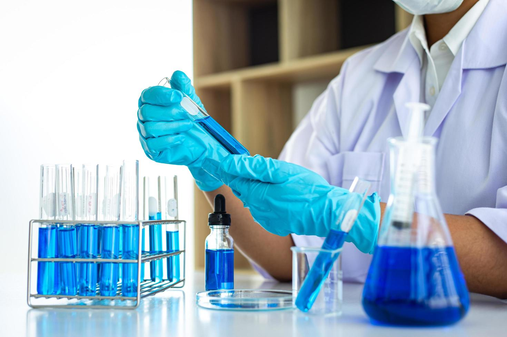

Hacemos el procesamiento de muestras biológicas y estudios de gabinete e imagenología para el público en general, empresas públicas, privadas e instituciones como bancas de desarrollo, municipios, hospitales e incluso prestadoras de servicios.
Labmedico2021 -Laboratorio clínico- fue creado con la finalidad de prestar un servicio integral en las áreas que comprenden la prevención, el diagnóstico y tratamiento. La prioridad es la atención de pacientes ambulatorios y hospitalizados en la sede de villa nueva para ofrecer los servicios de laboratorio de alta complejidad para otras instituciones de salud. Labmedico2021 es una Institución privada de tercer nivel de complejidad, que presta los servicios de Laboratorio Clínico, con el fin de responder a las exigencias y necesidades de la comunidad.

Nuestro objetivo de ofrecer al médico exámenes de laboratorio clínico y componentes sanguíneos para las actividades de prevención, diagnóstico y tratamiento de los pacientes, somos conscientes de que la mejor forma es brindar confiabilidad y precisión en la entrega de resultados, por eso la innovación es componente importante como factor crítico de éxito, nuestras ofertas de valor diferenciado en nuestro Laboratorio clínico son: Investigación Clínica Aplicada: las definiciones de la plataforma estratégica, incorporan la investigación a la práctica diaria.
Labmédico2021 cuenta con un amplio portafolio de pruebas que usted podrá consultar a continuación. Exámen Cups / Servinte/LIS Método Muestra requerida Condiciones de la muestra y el paciente Días de proceso Sección Acetaminofen 905702 Espectofotometría suero La muestra debe ser libre de hemolisis Tiempo de entregaun día habil. Referencia Ácido delta Aminolevulilnico (ALA) 903104 Cromatografía espectrofotometria Orina de 24 h , el recipiente es proporcionado por el Laboratorio. No es necesario preservativo para la orina, debe protegerse de la luz Martes y Jueves Referencia Acido 5 hidroxi-Indoloacetico orina 24h 903103 Cromatografía líquida de alta resolución HPLC Orina de 24 h . El recipiente es proporcionado por el Laboratorio.
